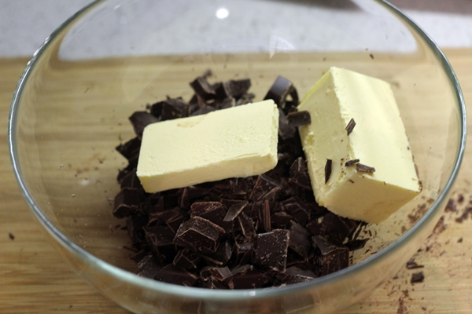
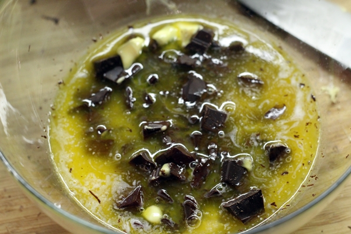
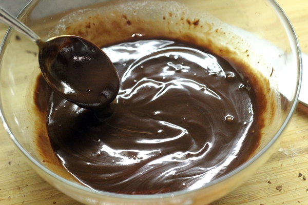

Hoy vamos a preparar una receta típica americana, un brownie de chocolate.
El brownie es un bizcocho compacto y dulce de color marrón (de ahí su nombre de «brownie»).
Hay muchos tipos de brownies ahora por la red pero yo voy a preparar la receta americana, el brownie de chocolate con nueces. Como he comentado antes, se puede preparar el brownie de mil maneras, con chocolate blanco, con chocolate con leche o incluso lo he llegado a ver de calabaza.
Lo mejor es prepararlo con la receta tradicional americana, con chocolate negro. El mejor acompañamiento para este bizcocho denso de chocolate creo que es un buen helado de vainilla, o cualquier otro tipo de helado.
Es mejor acompañarlo de una salsa o de un helado ya que tomándolo solo puede parecer un poco pesado y con ello ayudamos a que la experiencia sea mucho mejor. El brownie se puede preparar también en microondas aunque yo soy más de hacerlo a la antigua usanza, en el horno.
El brownie preparado en microondas creo que es una forma muy rápida de hacerlo pero no conseguimos la textura deseada que tiene un buen brownie, que sería entre compacto y esponjoso sin llegar a estar seco. Así que hoy vamos a preparar una receta fácil de brownie de chocolate que seguramente os encantará.
INGREDIENTES PARA HACER BROWNIE
- 200 gramos de chocolate negro
- 110 gramos de mantequilla
- 4 huevos
- 120 gramos de azúcar
- 1 cucharada de esencia de vainilla
- bicarbonato
- Nueces
- Pepitas de chocolate
- 85 gramos de harina
1.- En un bol ponemos el chocolate y la mantequilla. Lo metemos al microondas a temperatura media para que se vaya derritiendo. Una vez derretido lo lo mezclamos muy bien.


